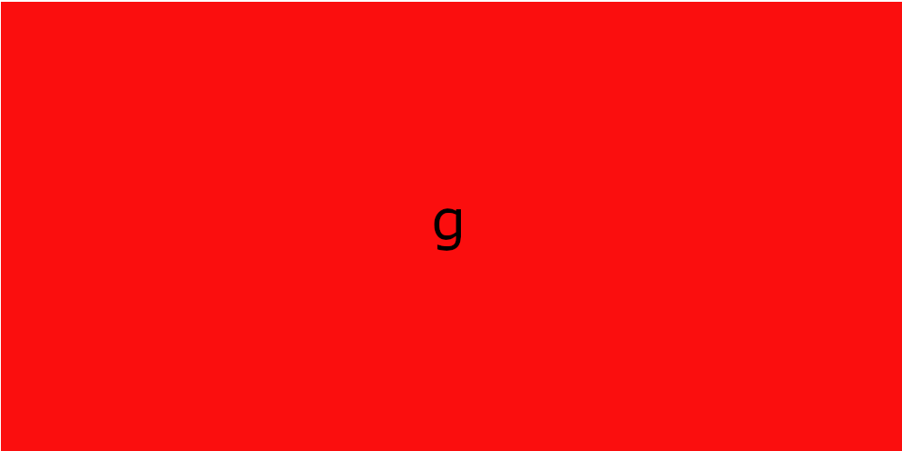

paragrafos e quebras
posso quebrar a linha com <br>
como vou
fazer agora
e <hr> para linha horizontal q vou fazer agr
vamos adicionar simbolos
€ $ ¥ £ ™ Δ ↑ © ®
agr emoji
para adicionar emoji ache o codigo na emojipedia e add &#x antes
🖖 🤓
imagens
para achar imagens sem direito autoral utilize o site unplash e pexels
arquivo png permite transparencia
arquivo jpeg alta compactacao
editar imagem no gimp
para adicionar imagem img+enter
para adicionar um favicon pesquise favicon.io ou iconarchive.com
melhor escolha arquivo ico
va na parte head do codigo e digite link e procure link favicon e cole o endereço da imagem no href
formatação de texto
negrito
posso usar tag b sem semantiga e strong com semantica
itálico
posso usar a tag i sem semantica e a tag em com semantica
marca texto
tag mark
texto deletado
uso a tag del
texto inserido
uso a tag ins
texto sobrescrito
x10+20 uso a tag sup
texto subscrito
H2O uso a tag sub
codigos e citações
a tag code deixa as letras com o mesmo espaço utilizado
posso manter
as quebras
ja definidas
com a tag
pre
citações simples
utilizo codigo q para criar as aspas semnatica
citaçao completa
utilizo blockquote para criar um patagrafo de citaçao e posso adicionar cite a tag para informar a url de onde foi tirada a informaçãp
Niccolò di Bernardo dei Machiavelli (em português: Nicolau Maquiavel; Florença, 3 de maio de 1469 — 21 de junho de 1527) foi um filósofo, historiador, poeta, diplomata e músico de origem florentina do Renascimento.[1] É reconhecido como fundador do pensamento e da ciência política moderna,[1] pelo fato de ter escrito sobre o Estado e o governo como realmente são, e não como deveriam ser.
abbr
utilizo a tag abbr para quando passar o mouse por cima da sigla apareça o significado
listas
lista ordenada
- acordar
- tomar café
- correr
utilizo a tag ol para listas ordenadas e type dentro da tag para especificar o tipo.sao eles: 1 A a I i
lista não ordenada
- pão
- manteiga
- queijo
utilizo a tag ul para listas nao ordenadas e type para escolher o tipo.sao eles: disc circle square
tags para lista,list-style-position,pode dizer se quer os icones de lista pra dentro ou pra fora,colums para indicar quantas colunas,list-style-typepara adicionar icones diferentes na lista o codigo do item deve ser iniciado com contra barra e encontra o codigo na emojipedia,utilize o codigo \00A0 para criar espaço entre o icone e o item da lista
lista de definição
- lista de definição
- é uma lista que diz a definiçao do terno,iniciando com dl para criar a lista dt para dizer o termo e dd para a definição
link
links externos
clique aqui para acessar a aulause a tag a para e adicione o link é recomendado que use o target _blank e rel external para a criaçao de outra aba,quando não utilizado o link quando aberto ira sobrepor seu site
links internos
acesse a pag2link de download
baixar livro em pdfigual os outros links porem troque target por download e coloque o nome do arquivo e troque rel por type e use o site mediatypes para procurar o type
imagens audios e videos
imagem dinamica

utilize a tag picture e dentro dela a tag img inserindo a imagem base,dps acima utilize a tag source media,dentro dela altere ser quer max ou min para definir o limite de largura de imagem e adiciona 50px a mais para n aparecer a barra de rolamento lateral no srcset escreva o caminho da imagem se tiver dentro de alguma pagina, adicione o type e escreva "image/png"
audio
tbm posso utilizar a tag audio e tirar o src e escrever a tag source src e adicionar o mmedia type do tipo de audio q sao mp3 ogg e wav
vc pode utilizar os comandos de controls q gera o controle de audio, o loop para tocar infinitamente quando acaba,preload e metadata para carregar anteriormente as informações de audio
videos
conversao de video atraves do HANDBRAKE
a inclusao de video no meu proprio servidor é feito do msm modo q a incorporaçao de audios,porem com a tag video,e os meios de midia sao:mp4,m4v,ogv,webm. (recomendado o m4v) mas insira tds para que qualquer navegador rode.
comando controls tbm utilizado,width para tamanho do video e poster para adicionar a thumb
é preferivel que utilize videos anexados do youtube clicando em compartilhar e incorporar como vou fazer agr
design css
tags uteis
- background-image limiar-gradiente: para criar degrade
- border-radio: para arredondar as bordas
- margin: margem do canto da tela
- padding: margem do texto pra caixa do texto
- text-shadow: adicionar sombra no texto
- box-shadow: dicionar sombra na caixa
- text-aling: alinhamento de texto
- border: para adicionar borda
- display e adicione inline-block para ficarem na msm linha
- transition-duration para editar a duraçao da do comando
criando design
utilize o site mockflowpara o desenvolvimento de design
utilize um arquivo css esclusivo para design e na parte head use a tag link css e adicione o link do arquivo
cores
utilizar adobe color e palleton para escolher as cores para o site
utilize a extençao colorzila para copiar cores que viu em algum site
fontes
para fontes estilizadas utilize o google fontes ou dafonts
para adicionar fontes mais estilizadas utilizeo site dafont.com baixe a fonte e ulilize a tag @font-face e a tag font-family no fontfamily coloque o nome qualquer pra fonte na url coloque o nome exato do arquivo no format tem asopçoes: opentype para otf truetype para ttf embedded-opentype truetype-aat para apple advanced typography e svg,cuiado que nem todo arquivo segue esta regra
utilize a extençao fontsninja pra descobrir qual fonte esta sento utilizada em um site
utilize o site whatfontis.com para descobrir a fonte usada em uma imagem
text-transform + uppercase para deixar as letras em maiusculo
font-variant+ small-caps para deixa as letras em estetica maiuscula porem com as primeiras letras maiores para n parecer que esta gritando
alinhamento
utilize text-indent para criar o espaçamento da primeira palavra do paragrafo
identificação
utilize o id dentro da tag desejada para criar uma identificaçao e no css crie um seletor com a tag# e o nome que vc deu ao id para editar somente ele
tudo que é id em html é # em css
utilize class dentro da tag desejadapara criar a identificaçao de mais de 1 elemento e crie um seletor no css com . e o nome que vc deu ao class para editar esse grupo
tudo que é class em html é . em css
utilize a tag span para selecionar um texto sem tirar ele de formataçao,assim podendo usar id e class
posso utilizar duas classes pro msm elemento
pseudoclasses utilize a tag: mais o estado que vc quer
pseudoelementos utilize a tag::
pseudo-classes selecionam elementos existentes com base em seu estado ou posição, enquanto pseudo-elementos criam ou estilizam partes específicas de um elemento como se fossem novos elementos
div é a area de toda a linha de uma ponta a outra da tela
o sinal > indica algo dentro da div por exemplo div > p significa q tem um paragrafo dentro da div
posso utilizar :root para criar uma area onde por variaveis para td o arquivo,variaveis sao definidas com --antes da palavra desejada
quando quiser que algo que nao funciona como bloco funcione como bloco use a tag display e adicione block
video responsivo
coloque o video dentro de uma div e e crie um seletor pra ela e um seletor pro iframe de dentro, na primeira div coloque a tag position e adicione relative na segunda div adicione a tag position e adicione absolute, mexa com as proporçoes em porcentagem width heigth top left... e na primeira div utilize o padding em porcentagem tbm
imagem de fundo
no background-size prefira utilizar o cover para cobrir a tela toda,o contain é para mostar a imagem td sem cortes
coloque background-image e adicione url e insira o caminho da imagem
100 de VH(view port)
background-repeat no repeat para nao repetir a imagem repeat y vertica e x horizontal
background-position insir primeiro a coluna depois a linha,center left right bottom e top
background-attachment fixed ou scroll,attachment=vinculo
background shorthand primeiro color image position repeat size attachment
o size é melhor por fora da shorthand pois costuma nao funcionar
para alinhamento de boxes crie duas divs uma dentro da outra a de fora coloque position absolute e a de dentro coloque absolute quando colocado absolute vc vai poder mexer com left e top da box coloque 50% pras duas depois crie um transform translate -50% -50% para centralizar a box
tecnicas de programaçao
clique com o mouse segure o shift e clique em outra linha para escrever nelas ao msm tempo
utilize ctrl shift p e selecione wrap with abreviation para envelopar o texto